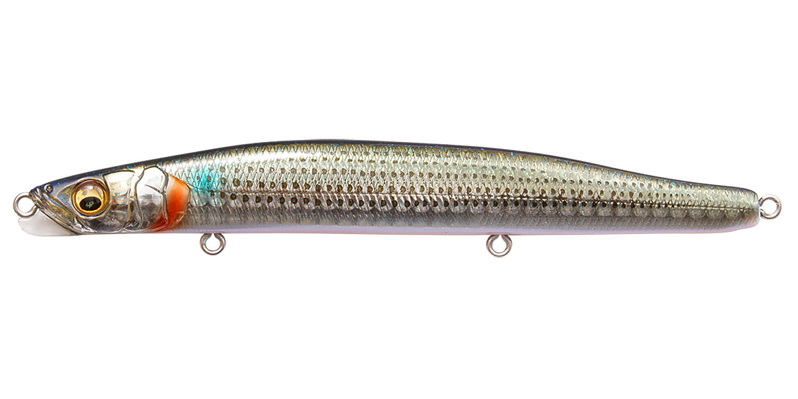
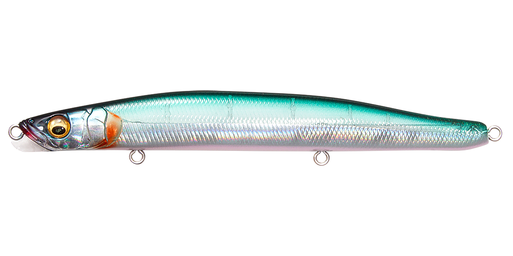
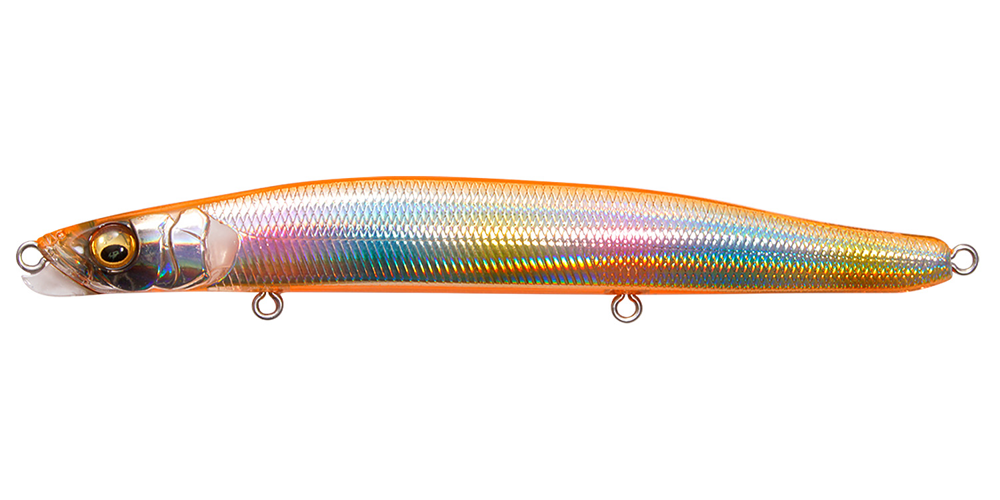
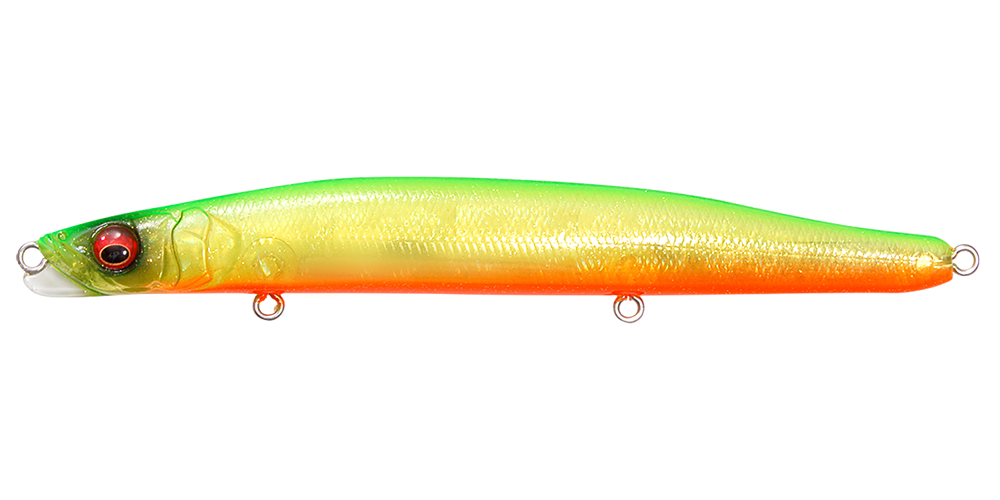

ゲンマスリム120S
（GENMA SLIM 120S）
ゲンマスリム120SはMegabass（メガバス）のスリムシンキングペンシルです。
ゲンマシリーズの特徴であるラインアイ下部の「SWIMMING KEEL（PAT.P）」を搭載した、2026年の新作。スリムなボディと後方低重心ウエイトでジグミノー並みの飛距離を出し、一般的なシンペンとは違うハイピッチロールの明滅で、深いレンジに潜む魚まで呼び寄せます。

画像出典:Megabass公式HP
スペック
- メーカー
- Megabass（メガバス）
- タイプ
- スリムシンキングペンシル
- 全長
- 120mm
- 自重
- 19.5g
- フック
- #5×3
- テクノロジー
- SWIMMING KEEL（PAT.P）
- ターゲット
- シーバス
- 発売
- 2026年
▼今すぐチェック
ゲンマスリム120Sの特徴
スイミングキールとスリムボディで、よく飛んでよく泳ぐシンペン
-
SWIMMING KEELで素早く安定して泳ぐ
ラインアイ下部のSWIMMING KEEL（PAT.P）が、アクションの素早い始動性・スイム時の安定性・適度な抵抗感による操作のしやすさを実現。シンペンでも今どう泳いでいるかが分かりやすくなっています。
-
ジグミノー並みの飛距離
スリムなボディと後方低重心ウエイトで、ジグミノー並みの圧倒的な飛距離を出せます。沖のポイントや広いエリアを探るのに向いています。
-
ハイピッチロールの明滅
一般的なシンキングペンシルとは違うハイピッチロールで、ボディの明滅でアピール。深いレンジに潜むスレた魚にも気付かせます。
ゲンマスリム120Sの使い方
基本はただ巻き。着水後にカウントダウンで狙いのレンジまで沈め、一定の速度で巻いてきます。スイミングキールのおかげで巻き始めからすぐに泳ぎ出し、抵抗感で泳ぎを感じ取れます。
バチパターンではゆっくり表層を、イワシやサヨリなど細身のベイトのときは少し速めに巻いてハイピッチロールで見せるのがおすすめです。
ゲンマスリム120Sの得意な状況
イワシやサヨリなど細身のベイトがいるとき、バチ抜けのシーズン。河川・河口・干潟・港湾で、遠投して広く探りたいときや、少し深いレンジにいる魚を狙いたいときに向いています。
ワンポイント
ゲンマには85S・110Sもあります。ベイトが小さいときは85S、もう少し太いシルエットで幅広く使いたいときは110Sと使い分けましょう。
ゲンマシリーズの使い分け
| モデル | 全長／自重 | 得意な場面 |
|---|---|---|
| ゲンマ85S | 85mm／13g・17g | 小型ベイトや港湾の近距離に |
| ゲンマ110S | 110mm／21g・29g | 飛距離と存在感のバランス型 |
| ゲンマスリム120S | 120mm／19.5g | 細身のベイトやバチに。ジグミノー並みの飛距離（本記事のモデル） |
どのモデルもSWIMMING KEEL（PAT.P）を搭載しています。ベイトの形と大きさ、届かせたい距離で選びましょう。
人気カラー
公式ラインナップから4色を紹介します（カラー名は公式の表記のまま）。

GG HARU BORA春のボラ（ハク）を意識したナチュラルカラー。春先の河川・河口に。

HT SAYORIサヨリを意識したカラー。細身のベイトがいるときにシルエットを合わせたいときに。

JOUYATOU MAGIC常夜灯まわりのナイトゲームを意識したカラー。明暗部やバチ抜けの夜に。

GHOST LIME CHART OBゴースト系のライムチャート。濁りやローライトでもシルエットを出したいときに。
画像出典:Megabass公式HP
ゲンマスリム120Sに似ているルアー
-
 ゲンマ110S
メガバス
詳細はこちら＞
ゲンマ110S
メガバス
詳細はこちら＞
全長110mm・21g／29gの同シリーズ。少し太いシルエットで、流れやサーフで幅広く使いたいときに。
-
 ゲンマ85S
メガバス
詳細はこちら＞
ゲンマ85S
メガバス
詳細はこちら＞
全長85mm・13g／17gの同シリーズ。稚鮎やハクなど、もっと小さいベイトのときに。
-
 モアザン スイッチヒッター105S
DAIWA
詳細はこちら＞
モアザン スイッチヒッター105S
DAIWA
詳細はこちら＞
全長105mm・自重21.2gのシンキングペンシル。同じくらいの重さで、S字スラロームで見せたいときに。